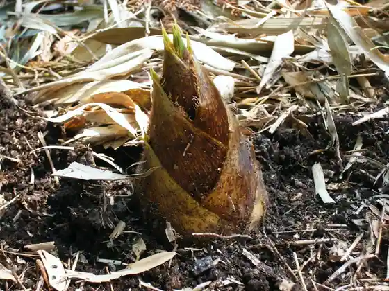

Tagami Bambubu 2026
Tagami, Niigata · 0256-47-0661 · Official / source link
Yu Tagami Onsen
Tagami, Niigata · 0256-57-2291 · Official / source link
Higaeri Onsen Gomado Yu Tsu Ta Sato Kan
Tagami, Niigata · 0256-57-6301 · Official / source link
Take no Ko Festival
Tagami, Niigata · 0256-47-0661 · Official / source link

Roadside Station (Tagami)
Tagami, Niigata · 0256-47-0661 · Official / source link
Tsubaki Kotobukiso
Tagami, Niigata · 0256-57-2040 · Official / source link
Goma Doyama Goma Doyama Tozanguchi
Tagami, Niigata · 0256-57-6225 · Official / source link
Goma Doyama Ajisai Sono
Tagami, Niigata · 0256-57-6225 · Official / source link
Tagami General Park YOU Yu Land Campground
Tagami, Niigata · 0256-57-5945 · Official / source link
Dai 47 Kaigo Ma Doyama Yu Tagami Onsen Ajisai Festival
Tagami, Niigata · 0256-57-6225 · Official / source link
Tagami General Park YOU Yu Land
Tagami, Niigata · 0256-57-5945 · Official / source link
Shigeno Tansu Mise Kojokengaku Komono Zukuri Experience
Tagami, Niigata · 0256-57-6225 · Official / source link
Dai 15 Kai Yu Tagami Onsen Onsen Festival
Tagami, Niigata · 0256-57-6225 · Official / source link
Ryo Gen Tera no Tsunagigaya
Tagami, Niigata · 0256-57-3422 · Official / source link
Echigo Gono no Kan Tsubaki Kotobukiso Ranchi
Tagami, Niigata · 0256-57-2040 · Official / source link
Take no Ko Furukosu
Tagami, Niigata · 0256-57-6225 · Official / source link
Goma Do Castle Ruins
Tagami, Niigata · 0256-57-6225 · Official / source link
Yu Tagami Onsen SWEETS Purojiekuto
Tagami, Niigata · 0256-57-6225 · Official / source link
Kokoro no Iyashi Zazen Experience
Tagami, Niigata · 0256-57-2291 · Official / source link
Ume Kakohin Umeboshi Umeshu Ume Daifuku
Tagami, Niigata · 0256-57-6225 · Official / source link